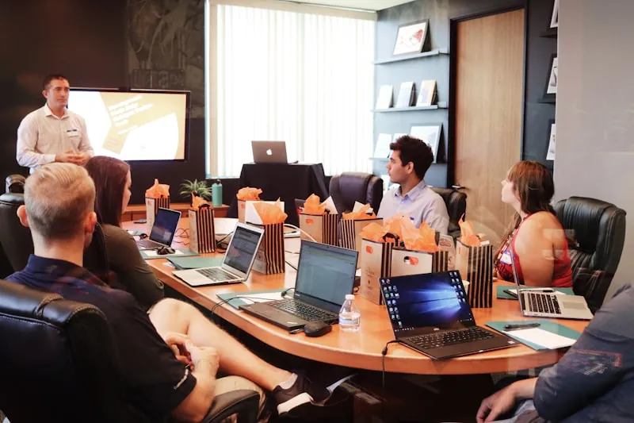

Our solutions
Three solutions, engineered and tailored to deliver results and help organisations grow
The framework shows what determines whether AI delivers business value. Our solutions are how we act on each stage of it.
DRIVE Discovery gives you evidence in three weeks on which operational problems to solve first, and why previous interventions didn't stick. A 12-week Full Diagnostic takes you through all five stages.
Book a consultationMeasure it
DRIVE Adaptability Diagnostic
Reveal the hidden barriers to AI adoption. DRIVE identifies the organisational conditions, capability gaps and human barriers that influence whether technology innovations will be adopted and scaled.
See DRIVE in detail→Embed it
Advisory
Turn evidence into action. Advisory helps leaders spot organisational barriers and make sharper decisions, working alongside the AI and technology initiatives you already have running.
See Advisory in detail→Scale it
Workforce Readiness
Build an AI-ready workforce. It takes more than training. People need the habits and confidence to actually use AI day to day.
For organisations and teams
Build responsible AI capability around real workflows, tools and governance needs.
For universities and education partners
Co-deliver applied Responsible AI experiences that bridge study and industry practice.
Sunway University pilot
Delivered with Sunway University under an international industry-immersion partnership. Outcomes from this pilot are already published.

DRIVE in detail
Measure organisational conditions before further AI investment
DRIVE Adaptability Diagnostic
What evidence tells you your AI investment will succeed?
The conditions inside your organisation determine whether AI investment delivers business value. DRIVE reveals and measures them, so you invest with evidence, not in the fog.
Book a Discovery ConsultationRight now, you’re investing in the fog
AI budgets approved without evidence.
Rollouts scaled before the conditions are ready.
Value assumed, never measured.
What DRIVE does
An evidence-based roadmap, not an opinion
DRIVE identifies the organisational conditions, capability gaps and human barriers that influence whether technology innovations will be adopted and scaled. This gives leaders a roadmap to address risks early and speed up adoption, so the technology gets used and the value can be measured.
It measures the Organisational Environment stage of the LEAD framework. These are the conditions people actually respond to, rather than the technology itself.
What you receive
Evidence of the hidden barriers influencing AI adoption
Clear leadership priorities
Targeted interventions
Measurable business outcomes
Two ways to run DRIVE
Start in three weeks, or run the full five stages.
Discovery stands on its own. It answers which operational problems to solve first, and why previous interventions did not stick.
D
R
I
V
E
Identifies which operational problems to solve first and why previous interventions did not stick. Stands on its own.
Shows you where the biggest risks are, and what to fund first, next and later.
Case study
See case studiesEmbed it
Advisory in detail
Turn evidence into action, alongside the AI and technology initiatives already running.
Scale it
Workforce Readiness in detail
Build an AI-ready workforce, where readiness means habits, confidence and perceived control rather than knowledge alone.
Adaptability Accelerator in detail
Part of NeuroAIQ’s adaptability system.
Not sure which is the right starting point?
Every engagement begins with understanding your organisation, your AI initiatives and the outcomes you’re trying to achieve.
Book a Discovery Consultation